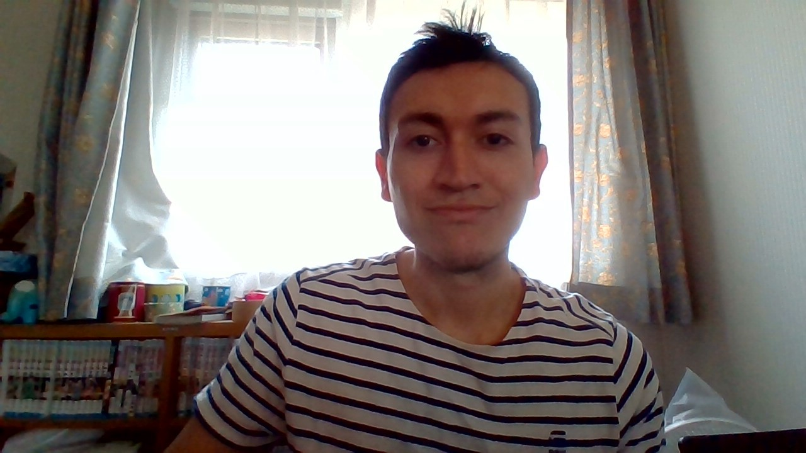

Sobre la pagina web
Logo unad:

Una imagen de la UNAD..
Foto de mi y una breve descripcion de la pagina web.
Bienvenido!
Hola soy estudiante de ing de sistemas para esta actividad Fase 4 del curso de diseno de paginas web, e creado esta pagina web con el framework bootstrap .
Media Queries y medidas para mejorar el SEO
En desarrollo web, las media queries son un módulo CSS3 que permite adaptar la representación del contenido a características del dispositivo como la resolución de pantalla o la presencia de características de accesibilidad como el braille.
El posicionamiento en buscadores, optimización en motores de búsqueda o SEO, es un conjunto de acciones orientadas a mejorar el posicionamiento de un sitio web en la lista de resultados de Google, Bing, u otros buscadores de internet.